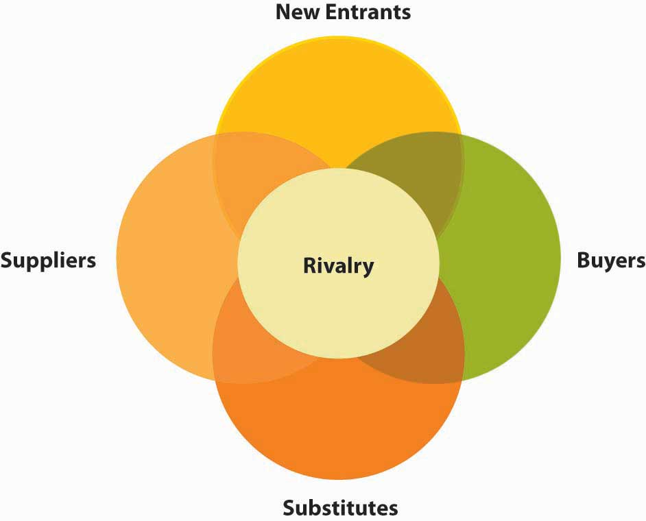

In this section, you will learn about some of the basic external inputs for strategy formulation—the determinants of a firm’s opportunities and threats. We will focus on three aspects of external analysis here, though you recognize that these should be complemented by internal analysis as well. For the external environment, it is best to start with the general environment, and then work your way into the focal industry or industry segment.
When appraising the external environment of the organization you will typically start with its general environment. But what does this mean? The general environment is composed of dimensions in the broader society that influence an industry and the firms within it.Fahey, L. (1999). Competitors. New York: Wiley; Walters, B. A., & Priem, R. L. (1999). Business strategy and CEO intelligence acquisition. Competitive Intelligence Review, 10(2), 15–22. We group these dimensions into six segments: political, economic, social, technical or technological, environmental, and legal. You can use the simple acronym, PESTELStands for the political, economic, social, technological, environmental, and legal dimensions of an organization’s external environment., to help remind you of these six general environment segments. Examples of elements analyzed in each of these segments are shown next.
Table 5.1 PESTEL Analysis
| Political | Economic |
|---|---|
| How stable is the political environment? | What are current and forecast interest rates? |
| What are local taxation policies, and how do these affect your business? | What is the level of inflation, what is it forecast to be, and how does this affect the growth of your market? |
| Is the government involved in trading agreements such as EU, NAFTA, ASEAN, or others? | What are local employment levels per capita and how are they changing? |
| What are the foreign trade regulations? | What are the long-term prospects for the economy gross domestic product (GDP) per capita, and so on? |
| What are the social welfare policies? | What are exchange rates between critical markets and how will they affect production and distribution of your goods? |
| Social or Socio-cultural | Technical or Technological |
|---|---|
| What are local lifestyle trends? | What is the level of research funding in government and the industry, and are those levels changing? |
| What are the current demographics, and how are they changing? | What is the government and industry’s level of interest and focus on technology? |
| What is the level and distribution of education and income? | How mature is the technology? |
| What are the dominant local religions and what influence do they have on consumer attitudes and opinions? | What is the status of intellectual property issues in the local environment? |
| What is the level of consumerism and popular attitudes toward it? | Are potentially disruptive technologies in adjacent industries creeping in at the edges of the focal industry? |
| What pending legislation is there that affects corporate social policies (e.g., domestic partner benefits, maternity/paternity leave)? | How fast is technology changing? |
| What are the attitudes toward work and leisure? | What role does technology play in competitive advantage? |
| Environmental | Legal |
|---|---|
| What are local environmental issues? | What are the regulations regarding monopolies and private property? |
| Are there any ecological or environmental issues relevant to your industry that are pending? | Does intellectual property have legal protections? |
| How do the activities of international pressure groups affect your business (e.g., Greenpeace, Earth First, PETA)? | Are there relevant consumer laws? |
| Are there environmental protection laws? What are the regulations regarding waste disposal and energy consumption? | What is the status of employment, heath and safety, and product safety laws? |
Firms cannot directly control the general environment’s segments and elements. Accordingly, successful companies gather the information required to understand each segment and its implications for the selection and implementation of the appropriate strategies. For example, the terrorist attacks in the United States on September 11, 2001, surprised businesses throughout the world. This single set of events had substantial effects on the U.S. economy. Although individual firms were affected differently, none could control the U.S. economy. Instead, companies around the globe were challenged to understand the effects of this economy’s decline on their current and future strategies. A similar set of events and relationships was seen around the world as financial markets began to struggle one after the other starting in late 2008.
Although the degree of impact varies, these environmental segments affect each industry and its firms. The challenge to the firm is to evaluate those elements in each segment that are of the greatest importance. Resulting from these efforts should be a recognition of environmental changes, trends, opportunities, and threats.
When we say microenvironment we are referring primarily to an organization’s industry, and the upstream and downstream markets related to it. An industryA group of firms producing products that are close substitutes. is a group of firms producing products that are close substitutes. In the course of competition, these firms influence one another. Typically, industries include a rich mix of competitive strategies that companies use in pursuing strategic competitiveness and above-average returns. In part, these strategies are chosen because of the influence of an industry’s characteristics.Spanos, Y. E., & Lioukas, S. (2001). An examination into the causal logic of rent generation: Contrasting Porter’s competitive strategy framework and the resource-based perspective. Strategic Management Journal, 22, 907–934. Upstream markets are the industries that provide the raw material or inputs for the focal industry, while downstream markets are the industries (sometimes consumer segments) that consume the industry outputs. For example, the oil production market is upstream of the oil-refining market (and, conversely, the oil refiners are downstream of the oil producers), which in turn is upstream of the gasoline sales market. Instead of upstream and downstream, the terms wholesale and retail are often used. Accordingly, the industry microenvironmentConsists of stakeholder groups that a firm has regular dealings with. consists of stakeholder groups that a firm has regular dealings with. The way these relationships develop can affect the costs, quality, and overall success of a business.
Figure 5.18 Porter’s Five Forces
Adapted from Porter, M. (1980). Competitive strategy. New York: Free Press.
You can distill down the results of PESTEL and microenvironment analysis to view the competitive structure of an industry using Michael Porter’s five forces. Here you will find that your understanding of the microenvironment is particularly helpful. Porter’s model attempts to analyze the attractiveness of an industry by considering five forces within a market. According to Porter, the likelihood of firms making profits in a given industry depends on five factors: (1) barriers to entry and new entry threats, (2) buyer power, (3) supplier power, (4) threat from substitutes, and (5) rivalry.Porter, M. E. (1980). Competitive strategy. New York: Free Press.
Compared with the general environment, the industry environment has a more direct effect on the firm’s strategic competitiveness and above-average returns, as exemplified in the strategic focus. The intensity of industry competition and an industry’s profit potential (as measured by the long-run return on invested capital) are a function of five forces of competition: the threats posed by new entrants, the power of suppliers, the power of buyers, product substitutes, and the intensity of rivalry among competitors.
Porter’s five-forces model of competition expands the arena for competitive analysis. Historically, when studying the competitive environment, firms concentrated on companies with which they competed directly. However, firms must search more broadly to identify current and potential competitors by identifying potential customers as well as the firms serving them. Competing for the same customers and thus being influenced by how customers value location and firm capabilities in their decisions is referred to as the market microstructure.Zaheer, S., & Zaheer, A. (2001). Market microstructure in a global b2b network, Strategic Management Journal, 22, 859–873. Understanding this area is particularly important because, in recent years, industry boundaries have become blurred. For example, in the electrical utilities industry, cogenerators (firms that also produce power) are competing with regional utility companies. Moreover, telecommunications companies now compete with broadcasters, software manufacturers provide personal financial services, airlines sell mutual funds, and automakers sell insurance and provide financing.Hitt, M. A., Ricart I Costa, J., & Nixon, R. D. (1999). New managerial mindsets. New York: Wiley. In addition to focusing on customers rather than specific industry boundaries to define markets, geographic boundaries are also relevant. Research suggests that different geographic markets for the same product can have considerably different competitive conditions.Pan, Y., & Chi, P. S. K. (1999). Financial performance and survival of multinational corporations in China. Strategic Management Journal, 20, 359–374; Brooks, G. R. (1995). Defining market boundaries Strategic Management Journal, 16, 535–549.
The five-forces model recognizes that suppliers can become a firm’s competitors (by integrating forward), as can buyers (by integrating backward). Several firms have integrated forward in the pharmaceutical industry by acquiring distributors or wholesalers. In addition, firms choosing to enter a new market and those producing products that are adequate substitutes for existing products can become competitors of a company.
Another way to think about industry market structure is that these five sets of stakeholders are competing for profits in the given industry. For instance, if a supplier to an industry is powerful, they can charge higher prices. If the industry member can’t pass those higher costs onto their buyers in the form of higher prices, then the industry member makes less profit. For example, if you have a jewelry store, but are dependent on a monopolist like De Beers for diamonds, then De Beers actually is extracting more relative value from your industry (i.e., the retail jewelry business).
The likelihood of new entry is a function of the extent to which barriers to entry exist. Evidence suggests that companies often find it difficult to identify new competitors.Geroski, P. A. (1999). Early warning of new rivals. Sloan Management Review, 40(3), 107–116. Identifying new entrants is important because they can threaten the market share of existing competitors. One reason new entrants pose such a threat is that they bring additional production capacity. Unless the demand for a good or service is increasing, additional capacity holds consumers’ costs down, resulting in less revenue and lower returns for competing firms. Often, new entrants have a keen interest in gaining a large market share. As a result, new competitors may force existing firms to be more effective and efficient and to learn how to compete on new dimensions (for example, using an Internet-based distribution channel).
The more difficult it is for other firms to enter a market, the more likely it is that existing firms can make relatively high profits. The likelihood that firms will enter an industry is a function of two factors: barriers to entry and the retaliation expected from current industry participants. Entry barriers make it difficult for new firms to enter an industry and often place them at a competitive disadvantage even when they are able to enter. As such, high-entry barriers increase the returns for existing firms in the industry.Robinson, K. C., & McDougall, P. P. (2001). Entry barriers and new venture performance: A comparison of universal and contingency approaches. Strategic Management Journal, 22, 659–685.
The stronger the power of buyers in an industry, the more likely it is that they will be able to force down prices and reduce the profits of firms that provide the product. Firms seek to maximize the return on their invested capital. Alternatively, buyers (customers of an industry or firm) want to buy products at the lowest possible price—the point at which the industry earns the lowest acceptable rate of return on its invested capital. To reduce their costs, buyers bargain for higher-quality, greater levels of service, and lower prices. These outcomes are achieved by encouraging competitive battles among the industry’s firms.
The stronger the power of suppliers in an industry, the more difficult it is for firms within that sector to make a profit because suppliers can determine the terms and conditions on which business is conducted. Increasing prices and reducing the quality of its products are potential means used by suppliers to exert power over firms competing within an industry. If a firm is unable to recover cost increases by its suppliers through its pricing structure, its profitability is reduced by its suppliers’ actions.
This measures the ease with which buyers can switch to another product that does the same thing, such as using aluminum cans rather than glass or plastic bottles to package a beverage. The ease of switching depends on what costs would be involved (e.g., while it may be easy to sell Coke or Pepsi in bottles or cans, transferring all your data to a new database system and retraining staff could be expensive) and how similar customers perceive the alternatives to be. Substitute products are goods or services from outside a given industry that perform similar or the same functions as a product that the industry produces. For example, as a sugar substitute, NutraSweet places an upper limit on sugar manufacturers’ prices—NutraSweet and sugar perform the same function but with different characteristics.
Other product substitutes include fax machines instead of overnight deliveries, plastic containers rather than glass jars, and tea substituted for coffee. Recently, firms have introduced to the market several low-alcohol fruit-flavored drinks that many customers substitute for beer. For example, Smirnoff’s Ice was introduced with substantial advertising of the type often used for beer. Other firms have introduced lemonade with 5% alcohol (e.g., Doc Otis Hard Lemon) and tea and lemon combinations with alcohol (e.g., BoDean’s Twisted Tea). These products are increasing in popularity, especially among younger people, and, as product substitutes, have the potential to reduce overall sales of beer.Khermouch, G. (2001, March 5). Grown-up drinks for tender taste buds. Business Week, p. 96.
In general, product substitutes present a strong threat to a firm when customers face few, if any, switching costs and when the substitute product’s price is lower or its quality and performance capabilities are equal to or greater than those of the competing product. Differentiating a product along dimensions that customers value (such as price, quality, service after the sale, and location) reduces a substitute’s attractiveness.
This measures the degree of competition between existing firms. The higher the degree of rivalry, the more difficult it is for existing firms to generate high profits. The most prominent factors that experience shows to affect the intensity of firms’ rivalries are (1) numerous competitors, (2) slow industry growth, (3) high fixed costs, (4) lack of differentiation, (5) high strategic stakes and (6) high exit barriers.
Intense rivalries are common in industries with many companies. With multiple competitors, it is common for a few firms to believe that they can act without eliciting a response. However, evidence suggests that other firms generally are aware of competitors’ actions, often choosing to respond to them. At the other extreme, industries with only a few firms of equivalent size and power also tend to have strong rivalries. The large and often similar-sized resource bases of these firms permit vigorous actions and responses. The Fuji/Kodak and Airbus/Boeing competitive battles exemplify intense rivalries between pairs of relatively equivalent competitors.
When a market is growing, firms try to use resources effectively to serve an expanding customer base. Growing markets reduce the pressure to take customers from competitors. However, rivalry in nongrowth or slow-growth markets becomes more intense as firms battle to increase their market shares by attracting their competitors’ customers.
Typically, battles to protect market shares are fierce. Certainly, this has been the case with Fuji and Kodak. The instability in the market that results from these competitive engagements reduce profitability for firms throughout the industry, as is demonstrated by the commercial aircraft industry. The market for large aircraft is expected to decline or grow only slightly over the next few years. To expand market share, Boeing and Airbus will compete aggressively in terms of the introduction of new products and product and service differentiation. Both firms are likely to win some and lose other battles. Currently, however, Boeing is the leader.
When fixed costs account for a large part of total costs, companies try to maximize the use of their productive capacity. Doing so allows the firm to spread costs across a larger volume of output. However, when many firms attempt to maximize their productive capacity, excess capacity is created on an industry-wide basis. To then reduce inventories, individual companies typically cut the price of their product and offer rebates and other special discounts to customers. These practices, however, often intensify competition. The pattern of excess capacity at the industry level followed by intense rivalry at the firm level is observed frequently in industries with high storage costs. Perishable products, for example, lose their value rapidly with the passage of time. As their inventories grow, producers of perishable goods often use pricing strategies to sell products quickly.
When buyers find a differentiated product that satisfies their needs, they frequently purchase the product loyally over time. Industries with many companies that have successfully differentiated their products have less rivalry, resulting in lower competition for individual firms.Deephouse, D. L. (1999). To be different, or to be the same? It’s a question (and theory) of strategic balance. Strategic Management Journal, 20, 147–166. However, when buyers view products as commodities (as products with few differentiated features or capabilities), rivalry intensifies. In these instances, buyers’ purchasing decisions are based primarily on price and, to a lesser degree, service. Film for cameras is an example of a commodity. Thus, the competition between Fuji and Kodak is expected to be strong.
The effect of switching costs is identical to that described for differentiated products. The lower the buyers’ switching costs, the easier it is for competitors to attract buyers through pricing and service offerings. High switching costs, however, at least partially insulate the firm from rivals’ efforts to attract customers. Interestingly, the switching costs—such as pilot and mechanic training—are high in aircraft purchases, yet, the rivalry between Boeing and Airbus remains intense because the stakes for both are extremely high.
Competitive rivalry is likely to be high when it is important for several of the competitors to perform well in the market. For example, although it is diversified and is a market leader in other businesses, Samsung has targeted market leadership in the consumer electronics market. This market is quite important to Sony and other major competitors such as Hitachi, Matsushita, NEC, and Mitsubishi. Thus, we can expect substantial rivalry in this market over the next few years.
High strategic stakes can also exist in terms of geographic locations. For example, Japanese automobile manufacturers are committed to a significant presence in the U.S. marketplace. A key reason for this is that the United States is the world’s single largest market for auto manufacturers’ products. Because of the stakes involved in this country for Japanese and U.S. manufacturers, rivalry among firms in the U.S. and global automobile industry is highly intense. While close proximity tends to promote greater rivalry, physically proximate competition has potentially positive benefits as well. For example, when competitors are located near one another, it is easier for suppliers to serve them and they can develop economies of scale that lead to lower production costs. Additionally, communications with key industry stakeholders such as suppliers are facilitated and more efficient when they are close to the firm.Chung, W., & Kalnins, A. (2001). Agglomeration effects and performance: Test of the Texas lodging industry Strategic Management Journal, 22, 969–988.
Sometimes companies continue competing in an industry even though the returns on their invested capital are low or negative. Firms making this choice likely face high exit barriers, which include economic, strategic, and emotional factors, causing companies to remain in an industry when the profitability of doing so is questionable.
Using Porter’s analysis firms are likely to generate higher profits if the industry:
Profits are likely to be low if:
Effective industry analyses are products of careful study and interpretation of data and information from multiple sources. A wealth of industry-specific data is available to be analyzed. Because of globalization, international markets and rivalries must be included in the firm’s analyses. In fact, research shows that in some industries, international variables are more important than domestic ones as determinants of strategic competitiveness. Furthermore, because of the development of global markets, a country’s borders no longer restrict industry structures. In fact, movement into international markets enhances the chances of success for new ventures as well as more established firms.Kuemmerle, W. (2001). Home base and knowledge management in international ventures. Journal of Business Venturing, 17, 99–122; Lorenzoni, G., & Lipparini, A. (1999). The leveraging of interfirm relationships as a distinctive organizational capability: A longitudinal study. Strategic Management Journal, 20, 317–338.
Following study of the five forces of competition, the firm can develop the insights required to determine an industry’s attractiveness in terms of its potential to earn adequate or superior returns on its invested capital. In general, the stronger competitive forces are, the lower the profit potential for an industry’s firms. An unattractive industry has low entry barriers, suppliers and buyers with strong bargaining positions, strong competitive threats from product substitutes, and intense rivalry among competitors. These industry characteristics make it very difficult for firms to achieve strategic competitiveness and earn above-average returns. Alternatively, an attractive industry has high entry barriers, suppliers and buyers with little bargaining power, few competitive threats from product substitutes, and relatively moderate rivalry.Porter, M. E. (1980). Competitive strategy. New York: Free Press.
External environment analysis is a key input into strategy formulation. PESTEL is an external environment analysis framework that helps guide your prospecting in the political, economic, social, technological, environmental, and legal spheres of an organization’s external environment. Working inward to the focal organization, we discussed the broad dimensions of the stakeholders feeding into the firm. Porter’s five forces analysis considers (1) barriers to entry and new entry threats, (2) buyer power, (3) supplier power, (4) threat from substitutes, and (5) rivalry as key external environmental forces in developing strategy.